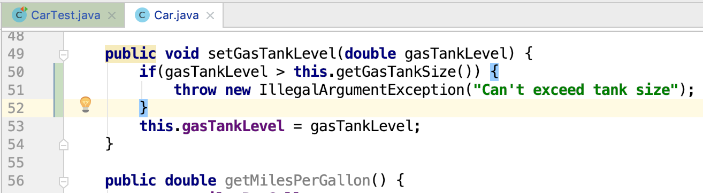

Concept: Unit Testing
A unit is a single, clearly state behavior. In many cases it will be one funciton, or method.
A unit test is an automated test that verifies that one unit behaves correctly.
We will be writing unit tests using JUnit 4 in IntelliJ. Some example code has been provided for us. We will be writing unit tests for the code that currently exists.
Create a New Runtime Configuration
Checkout the runtime configuration guide for a step-by-step guide for getting your runtime configuration created
- As a reminder from the runtime configuration article you will need to
- Add a new configuration
- Name the configuration
- Select the class file for our tests
- Apply the configuration
- Run new configuration by clicking the green arrow
- View test results

Currently our one test passes, because emptyTest is our only test, and it’s checking if 10 is 10, which is true.
Write and Run our Unit Tests

Our first three tests are very similar to one another. They each have a test_car object, and are checking that the gas tank level is correct after instantiating the car, driving the car within the range, and driving the car exceeding the range.
The assertEquals() method takes three parameters: The value we want to test, What it’s value should be, and the delta (how much the actual, and expected values can differ and still return true).
Our fourth test is a little different. We are going to perform an action to our car object, and we are expecting the object to throw an error. In this case we are going to attempt to add gas to our car that exceeds the gas tank size.

We are able to expect an exception to be thrown by adding (expected = IllegalArgumentException.class) after our @Test annotation. This is our way of telling Junit 4 that this test should pass if an IllegalArgumentException is thrown at any point during this test.
We also are calling the addGas method which has not yet been added to the Car class, we will need to add this functionality to run our test.
The fail() message will be displayed if the test fails. We have to import the fail method into this class to use it.
Let’s add the addGas method to our Car class so we can finish this final test.
- Add the addGas method to Car.java


My new test failed! In the output I got an unexpected exception. This test was expecting an IllegalArgumentException, but it got an AssertionError execption. This caused my test to fail. Further down in the output log we can see that our fail() statement printed out the statement about not being able to add more gas to the gastank than is possible.
- Refactor our Car class to throw an exception when too much gas is added to the gas tank

We added some code to our setGasTankLevel method that checks if the new gas tank level is greater than the gas tank size, and if it is it throws an IllegalArgumentException.

This time our test passed, and nothing was printed out to the output log! We have successfully written 4 unit tests in this walkthrough!
Hint
You can open a TODO window by going to View then Tool Windows then seelct TODO this opens a box at the bottom of IntelliJ showing you all the TODOs in the project.